Une tâche attend votre accord ? La notification tombe sur l'iPhone, vous touchez « oui », la tâche continue. Plusieurs Mac, un serveur privé au milieu, rien d'ouvert chez vous. Et un petit modèle sur un Mac toujours allumé qui lit vos messages et répond, sur votre abonnement Claude.
Préversion : pas encore ouverte au public. Pour l'utiliser, il faut un serveur à soi et un abonnement Claude connecté sur une machine toujours allumée. L'ouverture viendra quand l'installation sur son propre serveur sera simple et guidée de bout en bout. Ce qu'il faut
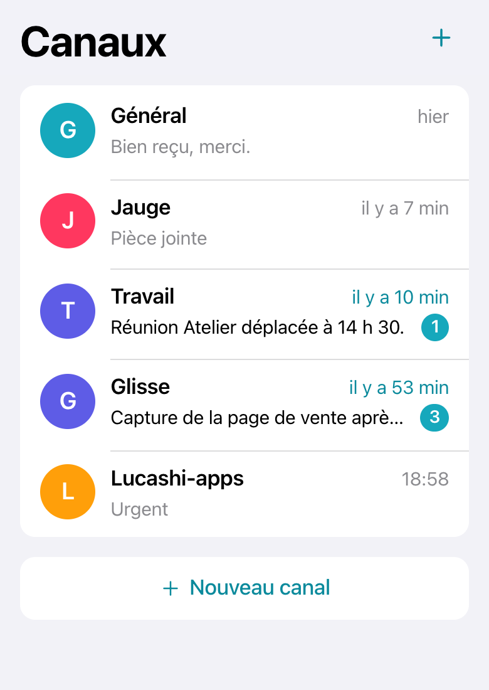
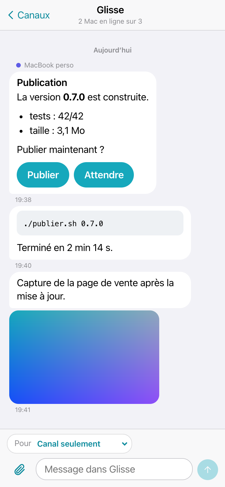
Captures réelles du site (version 0.2.0), données d'exemple.
Personne ne se connecte jamais vers un Mac. Chaque appareil ouvre lui-même sa connexion sortante vers le serveur, comme un site web : aucun port à ouvrir, aucun tunnel.
Ce que Relais fait aujourd'hui, et ce qui reste. Les pastilles disent la vérité du jour (27/10/2026, version 0.3.1).
Un fil « Général » et un par projet, créés tout seuls à la première publication. Les messages non lus s'affichent par canal et sur la pastille de l'app. On peut aussi y écrire depuis l'iPhone.
Le geste : toucher un canal pour lire ses messages.
Titres, listes, code, liens, en bulles. Le texte est assaini : aucun script, aucune image hors https.
Le geste : rien, ça s'affiche.
Une session pose une question avec ses choix. Vous touchez « oui » ou « non » ; la réponse revient au Mac qui l'attendait, et rien d'autre.
Le geste : toucher la notification, puis un bouton. Sur le Mac, l'onglet « Questions » pose et suit les questions.
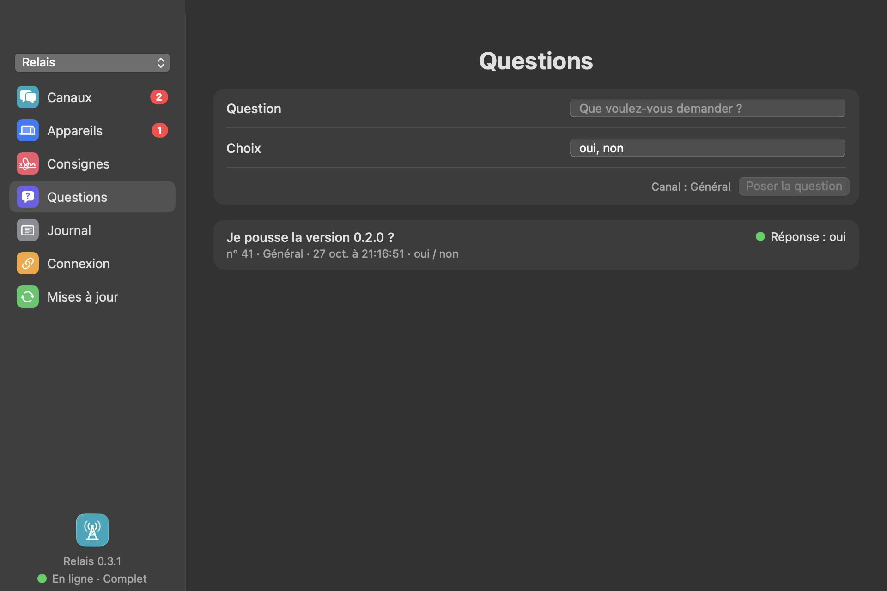
Capture réelle, Relais 0.3.1, données d'exemple.
Le Web Push d'iOS : sans compte développeur, sans app de la boutique. De 22 h à 7 h, silence, sauf message urgent.
Le geste : « Activer » les notifications dans Réglages, une fois. Il faut iOS 16.4 ou plus et le site ajouté à l'écran d'accueil.
Illustration, exemple. La notification réelle sur iPhone n'est pas encore essayée.
Un même serveur accueille plusieurs Mac. Chacun est en émission seule (il écrit des messages et pose des questions, comme un Mac de travail) ou en complet (il reçoit aussi les consignes signées et les fichiers). Le mode se choisit sur l'iPhone.
Le geste : Appareils › Ajouter un Mac, puis choisir le mode.
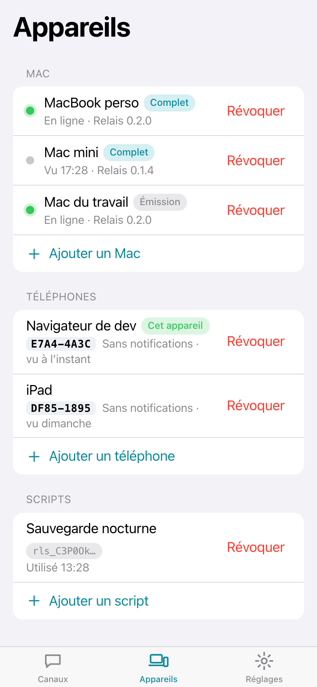
Sur l'iPhone, Appareils › Ajouter un Mac donne un code XXXX-XXXX (10 minutes, une seule fois). Sur le Mac, Connexion › Ajouter ce Mac : on tape le code, c'est tout. Plus de jeton à coller ; le collage reste possible, en avancé.
Les clés des téléphones arrivent avec une empreinte courte, du type 3F9A-C21B, à comparer à l'œil avec celle de l'iPhone. Une clé apparue plus tard reste « à approuver ».
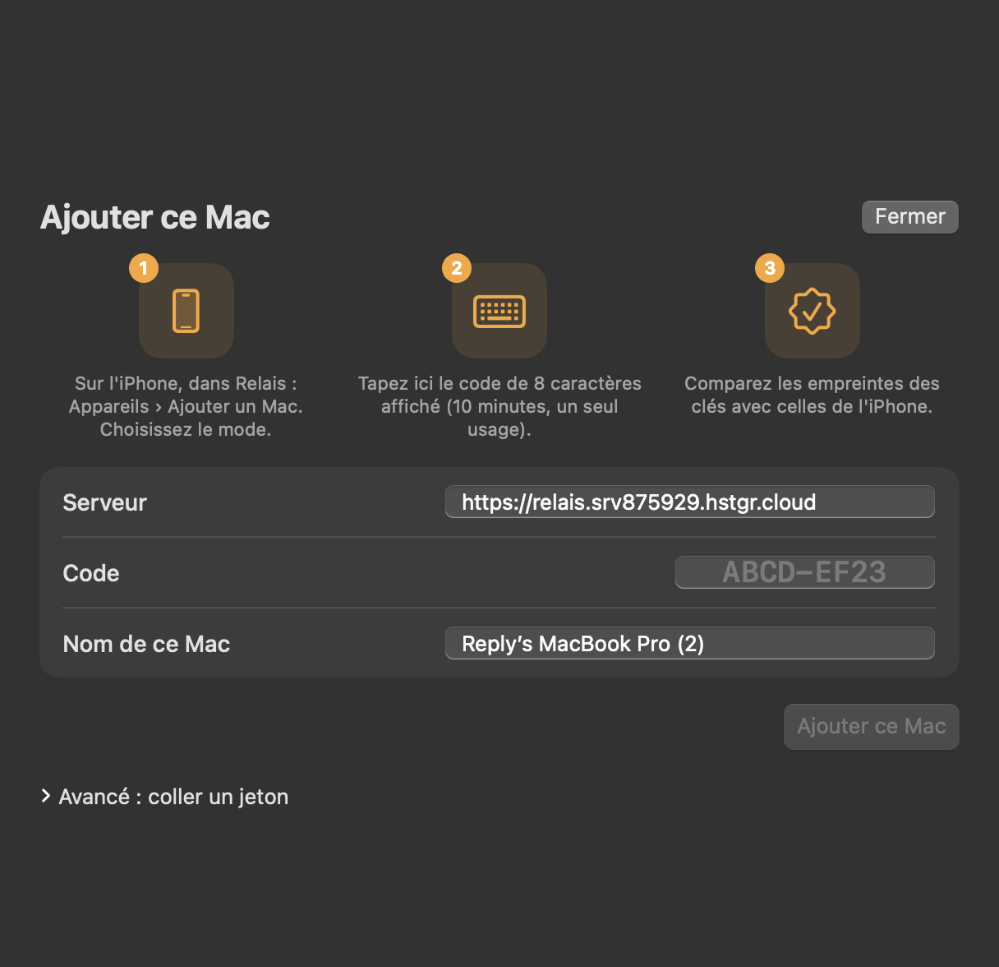
Capture réelle, Relais 0.3.1. Le code ABCD-EF23 est un exemple.
Photos, PDF, documents : de l'iPhone vers un Mac, d'un Mac vers l'iPhone. 20 Mo au plus, gardés 7 jours. Sur un Mac en mode complet, les fichiers reçus vont dans ~/Downloads/Relais, après vérification de leur empreinte.
Le geste : le trombone dans le fil, ou glisser un fichier dans la fenêtre du Mac.
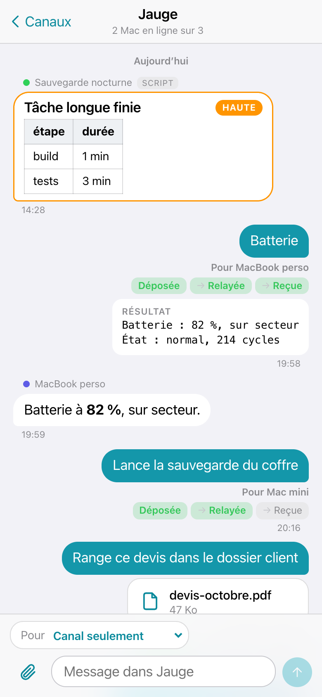
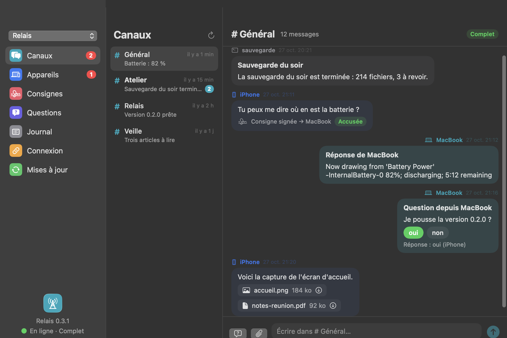
Captures réelles, site 0.2.0 et app Mac 0.3.1, données d'exemple.
Écrire à un Mac depuis l'iPhone envoie une consigne, signée par Face ID à chaque envoi. Le Mac la vérifie lui-même : signature, âge de 5 minutes au plus, jamais rejouée, clé de téléphone approuvée. Seule une action de sa liste blanche locale s'exécute.
Des raccourcis prêts à l'emploi : ping, batterie, disque, tâches, point du jour.
Le geste : choisir le Mac dans « Pour », écrire ou toucher un raccourci, valider avec Face ID.
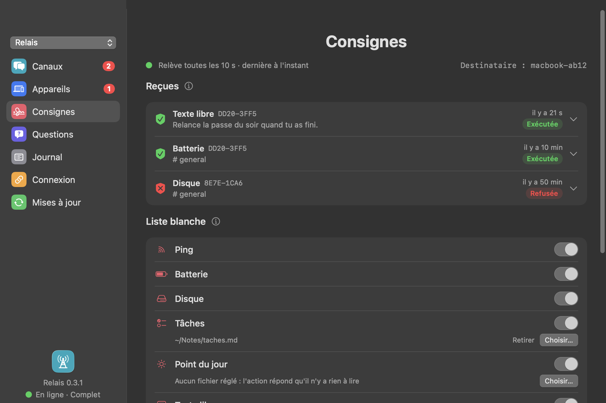
Capture réelle, Relais 0.3.1, données d'exemple.
Canaux, Appareils, Consignes, Questions, Journal, Connexion, Mises à jour. Elle émet les messages, suit les réponses, vérifie les consignes et prévient par une notification locale. Les mises à jour passent par les Releases publiques de GitHub.
Le geste : ouvrir « Appareils » pour approuver la clé d'un nouveau téléphone.
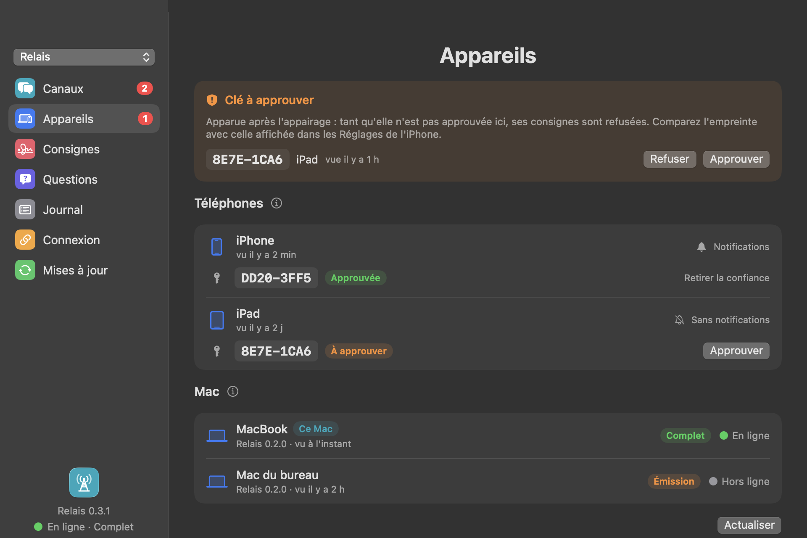
Capture réelle, Relais 0.3.1, données d'exemple.
L'assistant « Apporter mon serveur », dans l'app Mac : adresse du serveur, nom de domaine, accès SSH, puis une installation complète en 13 étapes (durcissement SSH, pare-feu, fail2ban, Node, nginx, HTTPS). À la fin, ce Mac s'ajoute tout seul.
Honnêtement : le code du serveur n'est pas encore public. Pour l'instant, l'assistant sert à qui a le code du site sur son Mac.
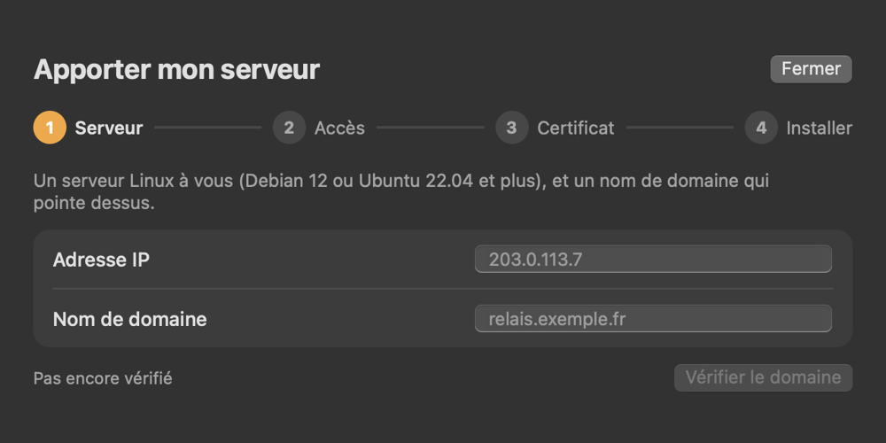
Capture réelle, Relais 0.2.0, adresse d'exemple.
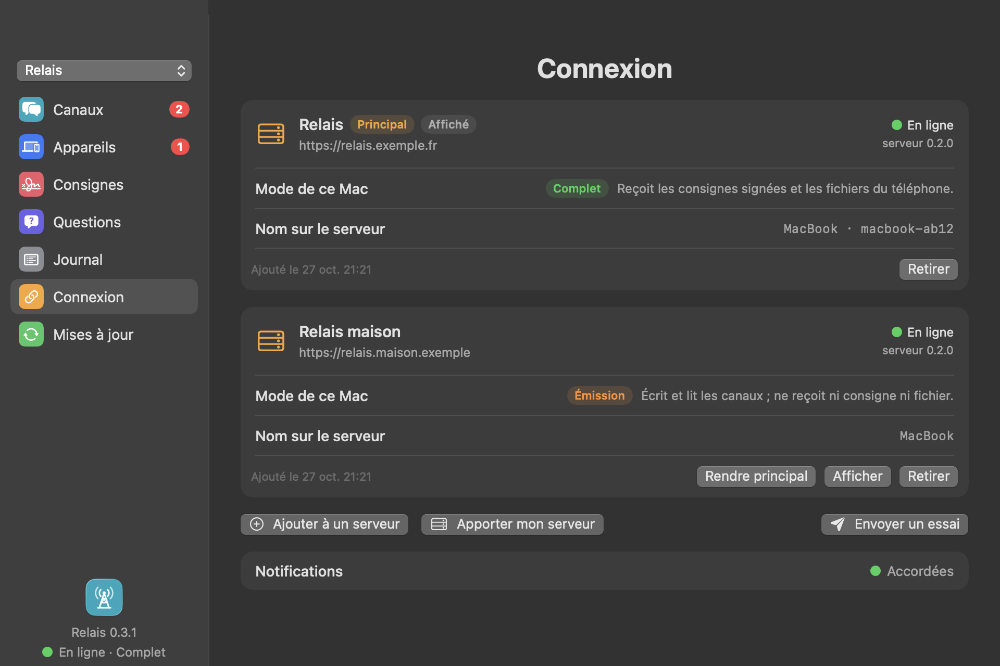
Capture réelle, onglet Connexion, données d'exemple.
Heure, appareil, question, réponse : le journal garde l'enveloppe, jamais le contenu. Les messages s'effacent après 30 jours, le journal après 90.
Le geste : onglet « Journal » sur le Mac, ou Réglages sur l'iPhone.
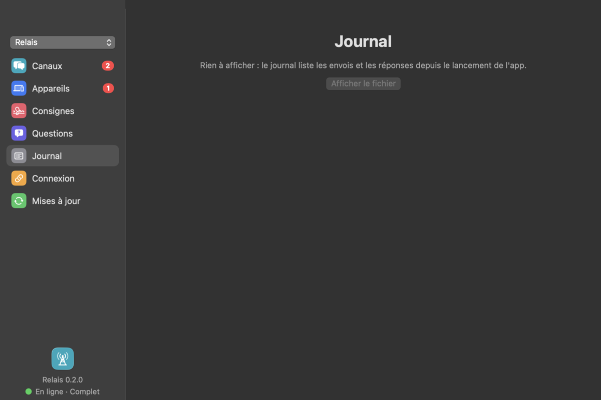
Capture réelle, Relais 0.2.0, données d'exemple.
Sur un Mac toujours allumé, le trieur lit chaque message écrit depuis le téléphone et répond toujours, dans le canal, pour montrer qu'il est lu. Il le range : réponse à une question d'une session, consigne pour la session du canal, demande de travail, ou rien à faire.
Une demande de travail ne part jamais seule : le trieur propose l'action et un code ; vous envoyez « oui CODE » depuis l'iPhone, signé par Face ID. Sans réponse, elle tombe au bout de 30 minutes. Seules les actions d'une liste fermée, dans les projets que vous avez ajoutés, peuvent être lancées.
Il tourne sur le modèle Haiku, effort faible, sans outils, sur votre abonnement Claude (jamais une clé d'API, jamais un autre compte), avec un plafond de 20 appels par heure. Sa consigne est un fichier texte que vous modifiez à la main. Le geste : Consignes › Trieur, un interrupteur, puis « Ajouter » les projets permis.
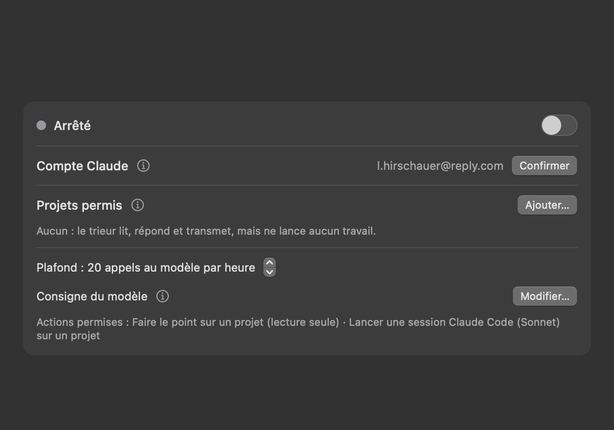
compte masquéCapture réelle, Relais 0.3.1, trieur arrêté, adresse du compte masquée.
L'outil relais-envoyer publie un message, pose une question à boutons et attend la réponse. C'est lui qu'appellent les sessions Claude Code. Avec relais-point, une session publie son point d'étape dans le canal de son projet, et y lit vos réponses. Son pendant relais-recevoir lit la boîte locale des consignes reçues (avec --suivre, il attend le message suivant).
Le geste : une ligne, par exemple relais-envoyer --canal glisse --choix oui,non "Publier ?"
relais-envoyer --canal glisse --question … --choix oui,nonExemple suivi : une session attend une réponse depuis dix minutes.
La session appelle relais-envoyer : « Publier Glisse 0.7.0 ? », choix oui / non. L'app Mac l'envoie, signée de son jeton.
Le serveur range le message dans le canal Glisse et pousse la notification. Un toucher ouvre la question.
Un bouton, Face ID. La réponse revient au Mac, la session continue. Le journal garde l'heure et le choix.
La sécurité est dans la conception, pas dans une promesse.
Il range et relaie. Il ne fabrique ni ne modifie aucune consigne.
La consigne est signée sur le téléphone ; le Mac vérifie lui-même la signature, l'âge (moins de 5 minutes), l'unicité et la clé approuvée. Un serveur piraté ne pilote rien.
Un jeton par Mac, stocké haché, limité en débit, révocable d'un geste. Un code d'appairage ne sert qu'une fois, pendant 10 minutes.
Les messages s'écrivent comme un texte qu'un administrateur pourrait lire : jamais de contenu client.
Relais ne simule ni activité ni statut, ni souris, ni veille.
Le message est rangé ; la notification ne part que s'il est urgent.
État au 27/10/2026, version 0.3.1.
Chaque étape se montre avant la suivante.
Relais est une préversion : il n'est pas encore ouvert au public. Voici ce qu'il demande aujourd'hui.
Un petit serveur privé (VPS) avec un nom de domaine, ou un Mac toujours allumé. L'assistant « Apporter mon serveur » de l'app Mac l'installe et le durcit.
Connecté à Claude Code sur une machine qui reste allumée : c'est lui qui fait tourner le trieur. Aucune clé d'API, aucun coût caché par message.
iPhone sous iOS 16.4 ou plus (le site, ajouté à l'écran d'accueil, sans compte Apple) ; Mac à puce Apple sous macOS 14 ou plus.
L'ouverture au public viendra quand une personne peu technique pourra monter sa propre instance, guidée de bout en bout. Où en est-on
Le téléchargement est libre ; l'accès à un serveur, lui, passe toujours par une invitation ou un code.
Sans invitation, rien ne marche. Le site ne s'ouvre qu'avec une clé d'accès créée par un lien d'invitation (15 minutes, une seule fois). Un Mac ne s'ajoute qu'avec un code de l'iPhone (10 minutes, une seule fois). Aucun mot de passe, aucun jeton n'est écrit sur cette page.
macOS 14 ou plus. Ouvrir le .dmg, glisser Relais dans Applications. Au premier lancement, ouvrir « Connexion › Ajouter ce Mac » et taper le code affiché sur l'iPhone (Appareils › Ajouter un Mac). Les mises à jour passent ensuite par les Releases publiques de GitHub.
Claude Code doit y être installé et connecté (claude, puis /login) sur votre abonnement personnel. Une seule commande installe l'app, confirme le compte Claude, attend l'ajout du Mac depuis l'iPhone (Appareils › Ajouter un Mac, mode complet) puis démarre le trieur. La connexion est sortante : aucun port à ouvrir.
curl -fsSL https://raw.githubusercontent.com/LucasHRCHatReply/relais-releases/main/installer.sh | zsh && ~/Applications/Relais.app/Contents/Resources/outils/relais-trieur --mettre-en-placeiOS 16.4 ou plus. Ouvrir dans Safari, puis Partager › « Sur l'écran d'accueil », ouvrir l'icône et créer la clé d'accès avec le lien d'invitation. Ensuite : Appareils › Ajouter un Mac, pour obtenir un code.
Ouvrir sur l'iPhoneDans l'app Mac, Connexion › Apporter mon serveur. Le code du serveur n'est pas encore public : pour l'instant, l'assistant sert à qui a le code du site sur son Mac. C'est la condition pour ouvrir Relais au public.